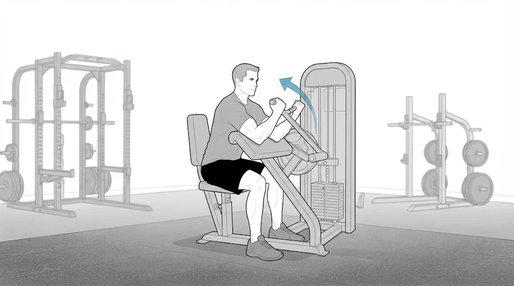

Debout, pieds largeur de hanches, barre tenue paumes vers le haut, bras tendus.
1. Plier les coudes pour monter la barre jusqu'aux épaules.
2. Redescendre lentement jusqu'à avoir les bras tendus.
Variante : avec des haltères, en alternant bras gauche et bras droit.
Conseil : coudes collés au corps et dos droit, sans se balancer pour monter la charge.

Assis sur le rameur, pieds sanglés, poignée en main, bras tendus et jambes fléchies.
1. Pousser avec les jambes, puis tirer la poignée vers le bas des côtes en penchant légèrement le buste en arrière.
2. Revenir dans l'ordre inverse : bras tendus, buste vers l'avant, puis jambes fléchies.
Variante : tirage horizontal à la poulie basse, assis, pour travailler le dos sans le cardio.
Conseil : la force vient d'abord des jambes, garder le dos droit pendant tout le mouvement.

Assis face à la machine, cuisses bloquées sous les rouleaux, barre tenue paumes vers soi (supination).
1. Tirer la barre jusqu'au haut de la poitrine en serrant les omoplates.
2. Remonter lentement jusqu'à avoir les bras tendus.
Variante : prise large, paumes vers l'avant, pour cibler davantage le haut du dos.
Conseil : ne pas tirer la barre derrière la nuque et garder le buste légèrement incliné en arrière.

Assis sur la machine, le dos des bras posé sur le pupitre, poignées en main.
1. Plier les coudes pour amener les poignées vers les épaules.
2. Redescendre lentement sans tendre complètement les bras.
Variante : curl au pupitre avec une barre ou un haltère, un bras après l'autre.
Conseil : les bras restent posés sur le pupitre, seuls les avant-bras bougent.